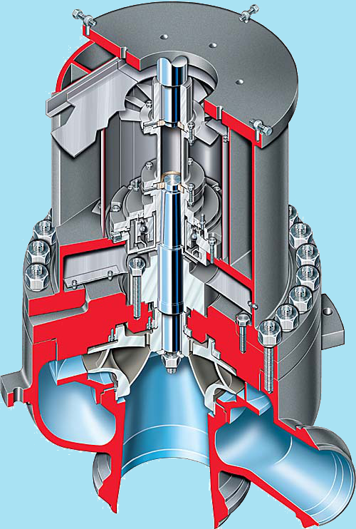

|

|
|
Para refrigerar el vaso del reactor hace falta un flujo de agua de mucho caudal. Este movimiento del agua se asegura
mediante potentes bombas centrífugas. Estas bombas hacen circular el agua por un circuito cerrado entre el reactor
y los generadores de vapor.
|